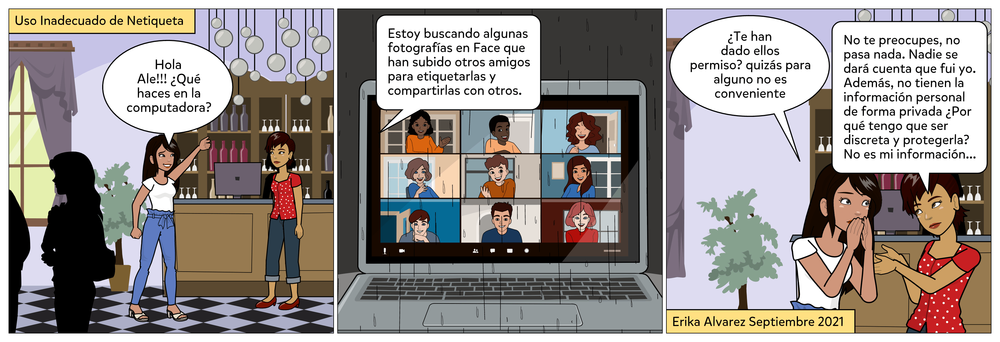

.
.
Diseñar de manera individual dos cómics en el que se aborden reglas de comportamientos –Netiquetas- en espacios virtuales como blogs, correos electrónicos, redes sociales, etc.
Pasos para la preparación de la evidencia:
1. Hacer uso del material proporcionado en el área de Lectura Previa de este objeto de aprendizaje u otras fuentes confiables para identificar cuáles son las reglas de comportamiento (Netiquetas) que deben aplicarse de forma responsable según el tipo de herramienta tecnológica, uso de la red, la información y el lenguaje.
2. a) Seleccionar dos herramientas tecnológicas diferentes para la comunicación digital, como Redes Sociales, Blog, Foros, Páginas Web, Videoconferencias, Correo electrónico, etc.
b) Seleccionar una Netiqueta adecuada para cada herramienta tecnológica seleccionada.
Estas selecciones servirán como base para relatar dos historias, cada una con al menos 4 escenas, utilizando la APP Pixton.
3. a) En la primera historia, se debe mostrar el uso incorrecto de la Netiqueta en una de las herramientas seleccionadas.
b) En la segunda historia, se debe ilustrar la aplicación correcta de la Netiqueta en la otra herramienta.
De esta manera, se utilizarán dos Netiquetas diferentes, una para cada herramienta tecnológica, demostrando en una historia el uso correcto y en la otra el uso incorrecto.
4. La selección de las herramientas tecnológicas y las dos reglas de comportamiento (Netiquetas) para crear los cómics será responsabilidad de cada estudiante. El diseño general a presentar también será determinado por cada estudiante.
5. Los cómics deben estar estructurados de manera clara y precisa, con texto e imágenes apropiados para expresar la Netiqueta en la historieta. Además, se debe agregar, utilizando la misma APP, el nombre del estudiante en la parte inferior de una de las escenas y la fecha. También se debe incluir una etiqueta en la parte superior de la primera escena que indique si se trata del uso adecuado o inadecuado de la Netiqueta.
Ejemplo breve (3 escenas) de primer comic
Herramienta seleccionada: Redes Sociales.
Netiqueta seleccionada: Tener permiso antes de etiquetar fotografías de otras personas.
Opción: Uso Inadecuado de Netiqueta

En este caso en particular, el cómic expresa el uso incorrecto de una Netiqueta.
Ahora bien, en el segundo cómic no se podrá utilizar la herramienta Redes Sociales ni la Netiqueta asociada a esta. En su lugar, deberá mostrarse el uso adecuado de otra regla de comportamiento (Netiqueta) en una herramienta tecnológica diferente, como Blog, Foros, Páginas Web, Videoconferencias, Correo electrónico, etc.
6. Una vez diseñadas las historietas en Pixton, copiar las imágenes de todas las escenas para incluirlas como parte de un documento Word, además del enlace compartido del cómic a la red.
7. La evidencia final será enviada por medio de la Plataforma Educativa Institucional en formato PDF con el nombre EC2-ACT5-APELLIDOS y debe incluir: Portada, las imágenes de todas las escenas de los 2 comics, especificando en cada una de ellas la Netiqueta y la herramienta tecnológica correspondiente. Así como su enlace compartido.
Ejemplo de descripción.
Se identifica en el siguiente cómic el uso inadecuado de la Netiqueta "Tener permiso antes de etiquetar fotografías de otras personas" para el ámbito de Redes Sociales.
Se puede localizar en: https://compartir.pixton.com/rzd7cjm (enlace ficticio para el ejemplo)